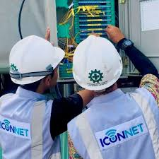
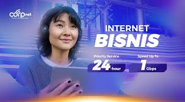

Rasakan koneksi Simetris, super stabil, dan tanpa kuota UNLIMITED untuk gaming, streaming, dan bekerja dari rumah.
Lihat Paket Rekomendasi Kami →Kami menyediakan infrastruktur jaringan terbaik untuk menjamin pengalaman online Anda.
Kecepatan Upload sama dengan Download. Sempurna untuk video conference dan live stream.
Kabel Fiber Optic tidak terpengaruh cuaca dan minim gangguan, menjamin koneksi stabil 24/7.
Tanpa batas FUP (Fair Usage Policy). Streaming sepuasnya tanpa takut kecepatan turun.
Dapatkan perangkat canggih dengan jangkauan luas dan koneksi yang lebih efisien.
Mulai dari Rp 199.000, Anda sudah bisa menikmati koneksi Fiber Optic Simetris.
Lihat Semua Harga & PaketKami menyediakan infrastruktur jaringan terbaik untuk menjamin pengalaman online Anda.
Lihatlah infrastruktur dan tim profesional yang bekerja untuk koneksi terbaik Anda.
Kabel fiber optic berkapasitas tinggi menjamin koneksi yang cepat dan stabil.

Teknisi bersertifikat kami siap melakukan instalasi dan pemeliharaan jaringan 24/7.
Kami hanya menggunakan router terbaru untuk jangkauan luas dan efisiensi di rumah Anda.

Sistem *data center* kami beroperasi dengan redundansi tinggi untuk meminimalkan *down time*.